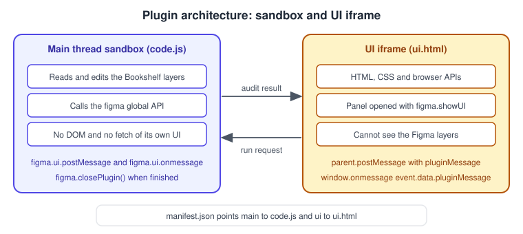
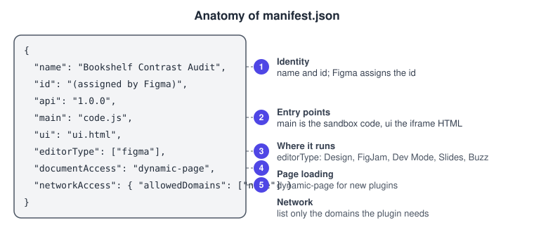
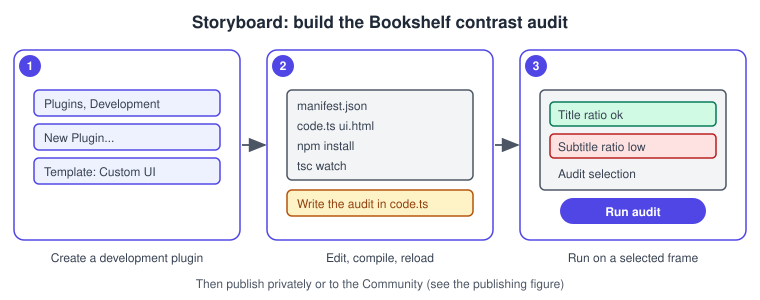
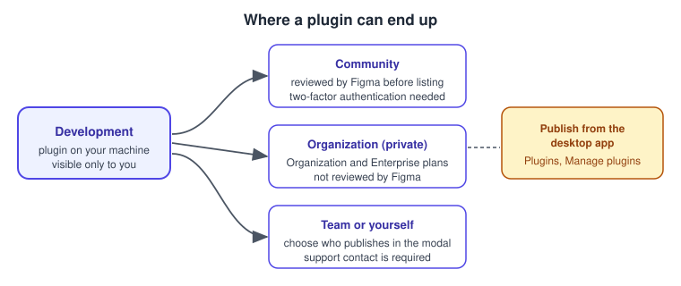

Building Plugins
|
This content was generated with the assistance of AI and should be verified against the official documentation before being relied on in production. |
This page was written on 2026-10-30 against the UI3 interface of Figma Design, Dev Mode and the Plugin API documentation. Creating and running a development plugin is available on every plan and needs the Figma desktop app for macOS or Windows; the pages consulted do not state a seat requirement for development. Publishing a plugin to the Community is available on the Starter, Professional, Education, Organization and Enterprise plans, needs the desktop app and needs two-factor authentication. Sharing a plugin privately inside a company needs an Organization or Enterprise plan. Classic plugins are generally available; shaders, which belong to the generative family, are documented as an open beta, and the status of generative plugins themselves is not stated on the pages consulted, so treat them with caution.
A plugin is a small program, written in JavaScript or TypeScript with an optional HTML interface, that reads and changes the layers of a file. Plugins can run in Figma Design, Dev Mode, FigJam, Figma Slides and Figma Buzz. The running example is a contrast audit for the Bookshelf design: select a book card, press a button and get a list of text layers whose colour against their background is too weak. Finding and installing plugins that other people built is covered on Using Plugins and Widgets, widgets are covered on Building Widgets, and calling Figma from outside the editor is covered on The REST API and Webhooks. The accessibility background for the audit is on Accessible and Inclusive Design.
Source: Figma Developer Docs: Plugins
How a plugin runs
A plugin has two halves that never share memory.
-
The main thread sandbox runs the code that the manifest names in
main. It can read and edit the layers of the file through thefigmaglobal. The documentation describes it as supporting modern JavaScript and a minimalconsole, but no browser APIs and no DOM. -
The UI iframe is created with
figma.showUI()from the HTML file named inui. It can use browser APIs and build any interface, but it cannot see the Figma layers.
The two halves talk by passing messages. The UI sends with parent.postMessage({ pluginMessage: ... }, '*') and the sandbox receives with figma.ui.onmessage. The sandbox sends with figma.ui.postMessage() and the UI receives it through window.onmessage as event.data.pluginMessage. Messages sent before the iframe finishes loading are queued. Objects, arrays, numbers, strings, booleans, null, undefined, Date and Uint8Array can travel; methods and prototype chains are not preserved, and Blob and ArrayBuffer are not supported.

Two rules from the documentation shape every plugin. A plugin must call figma.closePlugin() when it is finished, otherwise it keeps running and shows a "Running" toast; users can also cancel a plugin, and Figma then closes it. And pages load on demand: only the current page is guaranteed to be loaded, so code that reads other pages must call loadAsync() on the page first, or figma.loadAllPagesAsync() before a whole-document search, accepting delays on large files.
The manifest
Every plugin has a manifest.json at its root. Figma reads it to know what to run, where it can run and what it may touch.

| Field | Meaning |
|---|---|
|
The name shown in the menu, and the identifier that Figma assigns when you create the plugin; it is used to publish updates |
|
The Plugin API version the plugin targets |
|
Relative path to the compiled JavaScript file that runs in the sandbox |
|
Path to an HTML file, or a map of named HTML files |
|
An array drawn from |
|
Must be |
|
|
|
An array drawn from |
|
An array drawn from |
|
Languages and options of a codegen plugin |
|
Quick-action parameters, submenus and relaunch buttons |
|
Development only; not for plugins that are published |
|
An experimental shell command run before |
The networkAccess list is enforced. Requests to a domain that is not listed are blocked with a content-security-policy error, and the reasoning text appears on the Community page of a published plugin. The documentation suggests testing by starting from ["none"], running the plugin, noting the errors and adding each domain that is really needed. Plugins call the global fetch; because plugin iframes have a null origin, they can only call servers that send Access-Control-Allow-Origin: *. The contrast audit needs no network, so it uses ["none"].
Set up a plugin project
The documentation recommends TypeScript because the typings cover the whole API and give editor autocomplete, which prevents many crashes; plain JavaScript also works. The main field must always point to a JavaScript file, so TypeScript is compiled first. Figma also publishes typescript-eslint rules for plugin code in its eslint-plugin-figma-plugins repository on GitHub.
Create the Bookshelf contrast-audit plugin
-
Install the Figma desktop app (macOS or Windows), sign in and open or create a design file, for example the Bookshelf Design System library.
-
Install Node.js, which includes npm, and Visual Studio Code, which the quickstart recommends.
-
In the Figma menu in the upper-left corner choose Plugins, then Development, then "New Plugin…". The Actions menu (
Cmd/Ctrl+K) can also find it by name. -
In the "Create a plugin" modal choose the Figma design template, name the plugin "Bookshelf Contrast Audit" and choose the Custom UI template. The templates for Design, FigJam, Slides and Buzz are Default, Run once and Custom UI; the templates for Dev Mode are Inspect and Code Generator.
-
Choose "Save as" and pick a folder on disk. Figma creates the
manifest.json, a code file and an HTML file. -
Open the folder in Visual Studio Code, open a terminal and install the dependencies with the commands below. They bring in TypeScript, the Plugin API typings and the plugin linter.
-
Start the TypeScript compiler in watch mode. The quickstart does this with the build task (
Cmd+Shift+Bon macOS,Ctrl+Shift+Bon Windows) and the watch task fortsconfig.json; repeat it after reopening the editor. -
In the desktop app go to Plugins, Development, choose "Bookshelf Contrast Audit" and run it. The template sample draws five orange rectangles, which confirms that the toolchain works.
-
Optionally enable hot reloading, which the quickstart describes as restarting the plugin automatically when you rebuild.
# inside the plugin folder
npm install
# compile in watch mode (or use the editor's build task)
npx tsc --watch
A complete contrast-audit plugin
The audit compares the colour of every text layer inside the selection with the first solid fill found on its ancestors, using the WCAG relative-luminance formula and the 4.5 to 1 threshold for normal-size text. It deliberately ignores opacity, gradients and images, so it is a first pass that complements, and does not replace, the checks described on Accessible and Inclusive Design.
The manifest
{
"name": "Bookshelf Contrast Audit",
"id": "<assigned-by-figma>",
"api": "1.0.0",
"main": "code.js",
"ui": "ui.html",
"editorType": ["figma"],
"documentAccess": "dynamic-page",
"networkAccess": { "allowedDomains": ["none"] }
}The sandbox code
The type names such as SceneNode, TextNode and Paint come from the Plugin API typings that npm install added.
// code.ts
interface Rgb { r: number; g: number; b: number }
interface Finding { name: string; ratio: number; passes: boolean }
const MIN_RATIO = 4.5 // WCAG AA for normal-size text
figma.showUI(__html__, { width: 320, height: 360, themeColors: true })
function luminance({ r, g, b }: Rgb): number {
const lin = (c: number) =>
c <= 0.03928 ? c / 12.92 : Math.pow((c + 0.055) / 1.055, 2.4)
return 0.2126 * lin(r) + 0.7152 * lin(g) + 0.0722 * lin(b)
}
function contrast(a: Rgb, b: Rgb): number {
const [hi, lo] = [luminance(a), luminance(b)].sort((x, y) => y - x)
return (hi + 0.05) / (lo + 0.05)
}
function firstSolid(paints: readonly Paint[] | symbol): Rgb | null {
if (paints === figma.mixed) return null
for (const paint of paints) {
if (paint.type === 'SOLID' && paint.visible !== false) return paint.color
}
return null
}
function backgroundOf(node: BaseNode): Rgb | null {
let current = node.parent
while (current && current.type !== 'PAGE' && current.type !== 'DOCUMENT') {
if ('fills' in current) {
const color = firstSolid(current.fills)
if (color) return color
}
current = current.parent
}
return null
}
function audit(root: SceneNode): Finding[] {
const texts: TextNode[] =
root.type === 'TEXT'
? [root]
: 'findAll' in root
? (root.findAll((n) => n.type === 'TEXT') as TextNode[])
: []
const findings: Finding[] = []
for (const text of texts) {
const foreground = firstSolid(text.fills)
const background = backgroundOf(text)
if (!foreground || !background) continue // mixed, gradient or image: skip
const ratio = contrast(foreground, background)
findings.push({ name: text.name, ratio, passes: ratio >= MIN_RATIO })
}
return findings
}
figma.ui.onmessage = (msg: { type: string }) => {
if (msg.type !== 'run') return
const selection = figma.currentPage.selection
if (selection.length === 0) {
figma.notify('Select a Bookshelf frame first')
return
}
const findings = selection.flatMap(audit)
figma.ui.postMessage({ type: 'result', findings })
}The interface
The UI builds the list with textContent, never with innerHTML, so a layer named with markup cannot inject anything into the panel.
<!-- ui.html -->
<button id="run">Run audit</button>
<ul id="out"></ul>
<script>
document.getElementById('run').onclick = () => {
parent.postMessage({ pluginMessage: { type: 'run' } }, '*')
}
onmessage = (event) => {
const msg = event.data.pluginMessage
if (!msg || msg.type !== 'result') return
const list = document.getElementById('out')
list.textContent = ''
for (const f of msg.findings) {
const li = document.createElement('li')
li.textContent =
(f.passes ? 'Pass ' : 'Fail ') + f.name + ' ' + f.ratio.toFixed(2) + ':1'
list.appendChild(li)
}
}
</script>Run it
-
Compile the project (the watch task does it automatically).
-
Open the Bookshelf catalogue file and select the book-card frame on the canvas.
-
Open the Actions menu with
Cmd/Ctrl+K, find "Bookshelf Contrast Audit" under the development plugins, or use Plugins, Development. -
Press "Run audit" in the plugin panel.
-
Read the list. A grey subtitle on a white card may fail with a ratio just under 4.5 to 1; darken the subtitle colour variable and run the audit again.
-
Close the panel. Figma ends the run; production code should also call
figma.closePlugin()once a command has nothing more to do.
Selection works per page, and figma.currentPage.selection is a read-only array that can be empty, hold one layer or hold several; the code above handles all three cases. In Dev Mode the selection holds at most one node.
Debugging and testing
Open the developer console from Plugins, Development, "Open Console…", or with the shortcut Option+Cmd+I that the debugging page lists for macOS. console.log calls from the sandbox and the iframe appear there. A debugger; statement in the plugin code pauses execution so you can read the source in the developer tools. Logged objects can stop being expandable once the plugin closes, so remove the figma.closePlugin() call temporarily while debugging. Plugins in the Development menu can also run in a "Developer VM" for standard browser tooling, but the documentation warns that its performance results can be unrealistic, so do a final check in the normal sandbox. The figma global is available in the console of any file, which is a quick way to try an API call without building a plugin.
The pages consulted do not document an official unit-test framework for plugins. A practical, unofficial approach is to keep pure functions such as luminance and contrast in their own module and test them with any JavaScript test runner, then test the Figma-facing code manually on a Bookshelf test file that has one passing and one failing text layer.
Codegen plugins
A codegen plugin extends the code snippets in Dev Mode (see Dev Mode) with a language or framework that Figma does not generate natively, or with metadata that helps implement a design. Once installed it appears in the language dropdown of the Inspect panel, in the Code section, and it regenerates code as the selection changes.
| Requirement | Detail |
|---|---|
Manifest |
|
Preferences |
Optional |
Callback |
|
Restriction |
|
To try one on the Bookshelf design, create a plugin from the Dev Mode "Code Generator" template, then adapt the callback.
{
"name": "Bookshelf Snippets",
"id": "<assigned-by-figma>",
"api": "1.0.0",
"main": "code.js",
"editorType": ["dev"],
"capabilities": ["codegen", "vscode"],
"codegenLanguages": [{ "label": "Bookshelf React", "value": "react" }]
}if (figma.editorType === 'dev' && figma.mode === 'codegen') {
figma.codegen.on('generate', ({ node }) => [
{
title: 'Book card',
language: 'TYPESCRIPT',
code: `<BookCard title="${node.name}" />`,
},
])
}Select the book card in Dev Mode, open the Inspect panel and choose "Bookshelf React" in the language dropdown to see the snippet. Codegen plugins generate text from the layers; connecting a Figma component to the real component in your repository is a different mechanism, described on Code Connect.
Generative plugins
A generative plugin is built by an AI agent instead of being typed by hand. Through the Figma MCP server (see The Figma MCP Server) a supported MCP client can create a plugin or a shader. A generative plugin has a code.ts logic file, which runs in the sandbox and is the only file that can call figma.*, and a ui.html panel built with PropsKit. The agent first loads the figma-generative-plugins skill, asks which plan to use if you belong to several, creates a starter and replaces the code with an update. Figma builds, versions and deploys each update, so there is no separate compile step. The manifest.json of a generative plugin cannot be created or modified through the MCP tools, so a plugin whose manifest does not allow what you want cannot be fixed by an update. Generative plugins are available on Starter, Professional, Education, Organization and Enterprise plans and need Figma Design plus a supported MCP client. Shaders (fills and effects with a single main.ts file) are documented as an open beta. Education K-12 users do not get generative plugins.
In UI3 these resources are listed in the Tools tab of the left navigation bar, where the Source filter has a "Created by you" option; the pages consulted do not describe the AI-credit cost of building them, so check Plans, Seats and AI Credits. The agent itself is described on The Figma Agent and Skills.
To try it on Bookshelf, connect an MCP client, ask it to create a generative plugin that lists all text layers in the selected frame with their font size, review the code it produces and run the plugin from the Tools tab.
Publishing

Publish a classic plugin
-
Download the desktop app and enable two-factor authentication on your account.
-
Open a file in the desktop app and choose Plugins, Manage plugins from the Figma menu.
-
Next to your plugin open its menu and choose Publish.
-
Enter a name, a tagline, a description and a category.
-
Add an icon (the recommended size is 128 by 128 pixels) and a thumbnail (1920 by 1080 pixels). A playground file and up to nine carousel items are optional.
-
Optionally complete the data-security disclosure. The documentation notes that review can take up to two weeks.
-
Choose who publishes it (yourself, a team or the organization), give a support contact and review the network-access label that Figma derives from your manifest.
-
Choose Publish. The plugin appears in the Published section with an "In review" badge, and Figma emails you the decision. If it is rejected, fix the feedback and resubmit.
Once a plugin is approved, updates can be published immediately. Page details can be edited without publishing an update. Paid plugins need an approved creator account and an activated Stripe account.
Share a plugin inside an organization
On Organization and Enterprise plans, set the "Publish to" option to the organization. These private plugins are not reviewed by Figma. Any organization member can make and share a private plugin, only organization admins can share plugins to the organization’s Community profile, and only team admins can publish to a team’s profile. For a generative plugin, open the Tools tab, open the plugin’s menu, choose Publish and then "Publish internally".
Review guidelines
The review looks at quality (complete, works as described, no obvious crashes), trust and safety (no reading or changing a file without the user’s awareness, and only official Plugin API use), support (a way for users to reach you) and business fit (the Community is for sharing with all users, not for internal-only tools). The criteria are described as non-exhaustive.
What older guides get wrong
-
Older guides use the pre-2025 interface (UI2), with a top toolbar, a Resources button and an Assets to Library button. UI3 has been the only interface since 2025-04-30, and the left navigation bar changed again on 2026-01-07; plugins are now reached from the Figma menu, the Actions menu and, for generative plugins, the Tools tab.
-
Guides that show the Inspect tab with CSS, iOS and Android snippets predate Dev Mode, which replaced that tab; codegen plugins now extend Dev Mode.
-
Generative plugins, shaders and building plugins with the Figma agent post-date every book consulted.
-
Guides name third-party plugins such as accessibility checkers, wireframe kits, variable exporters and design-to-code tools. Check each one in the Community for recent maintenance before relying on it, and treat it as ecosystem, not as a Figma feature. The "Figma Tokens" plugin that older guides describe is now the third-party Tokens Studio plugin, which comes after native variables.
Source: Figma Release Notes
Pitfalls
-
Do not read or change layers from the iframe, and do not use the DOM from the sandbox; send a message instead.
-
Reading
childrenof a page that is not loaded throws an exception. Load the page first. -
Forgetting
figma.closePlugin()leaves the plugin running with a toast on screen. -
Wrapping messages incorrectly: the UI must send
{ pluginMessage: ... }, and the sandbox receives the inner value directly. -
Leaving
allowedDomainstoo broad orenableProposedApion in a plugin you intend to publish. -
Never write a Figma token or any API key into
code.tsorui.html: a published plugin is readable by users. If a plugin needs a server, keep secrets on that server.